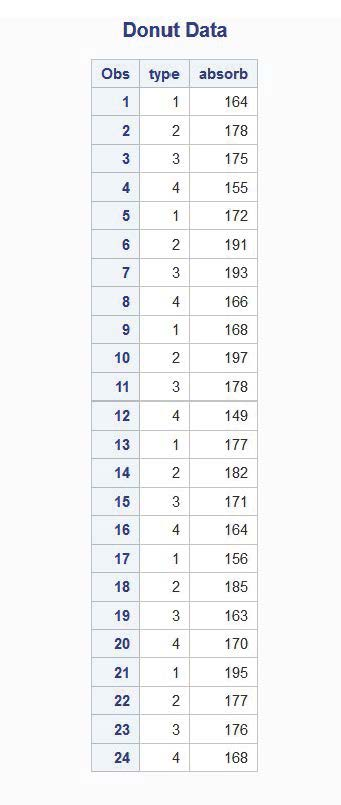
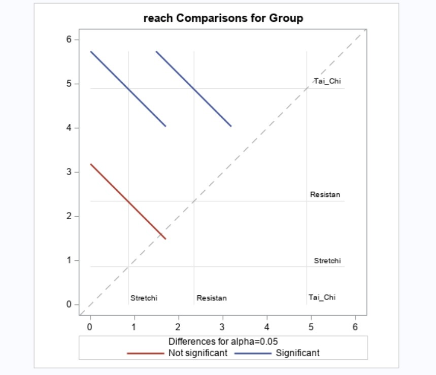
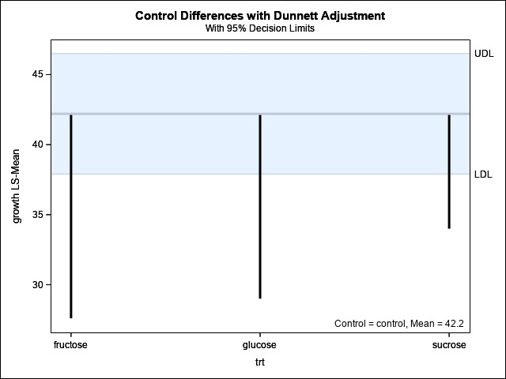
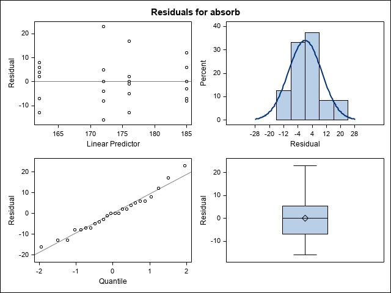

2 The Completely Randomized Design
The first experimental design we’ll consider is the completely randomized design or CRD. The CRD is an experimental design because
The CRD is characterized by
The CRD may be combined with several different treatment designs. To explore the CRD in more detail, we’ll start with the simplest treatment design, the one-way design. The one-way design is so named because
Within one-way designs there are four basic treatment structures:
Unstructured
Control versus other treatments
Quantitative
Other structure
Example: A donut manufacturer wants to see if the type of fat used to fry the donuts has any impact on the amount of fat absorbed by the donuts. The manufacturer has two types of animal fat and two types of vegetable fat that they would like to compare. They also have available 4 fryers, which can each fry 1 batch of 18 donuts at a time. They plan to measure the amount of fat absorbed in each batch.They have the resources to test 24 total batches of donuts.
Treatment Design:
Factor:
Levels:
Experimental Design:
- Run 6 batches of each fat in a Completely Randomized Design
There are two possible scenarios for the CRD. Discuss the pros and cons of each, and decide which one you would use and why.
- Scenario 1: Randomly assign fat to a fryer and prepare 6 batches.
- Scenario 2: Randomly select 6 of the 24 batches for each type of fat.
Here’s one possible experimental layout
| Batch | ||||||
|---|---|---|---|---|---|---|
| Fryer | 1 | 2 | 3 | 4 | 5 | 6 |
| 1 | 1 | 2 | 2 | 4 | 2 | 4 |
| 2 | 1 | 1 | 4 | 1 | 3 | 1 |
| 3 | 4 | 1 | 3 | 2 | 4 | 2 |
| 4 | 3 | 3 | 3 | 3 | 4 | 2 |
2.1 CRD Model and Basic Analysis
The CRD Model can be written in two different ways.
\(y_{ij}\) = amount of fat absorbed by the \(j^{th}\) batch of donuts prepared using the \(i^{th}\) fat
\(\mu\) = overall mean fat absorbed by a batch of donuts
\(\tau_i\) = treatment effect of fat \(i\) = additional amount of fat absorbed on average by batches prepared using fat type \(i\)
\(\epsilon_{ij}\) = random error = additional amount of fat absorbed by the \(j^{th}\) batch of donuts prepared using fat \(i\)
Some consequences of these assumptions:
Expected value:
Dispersion:
Distribution:
For this particular treatment design, there are several hypothesis tests that may be of interest. Write out in the symbols the null and alternative hypotheses for the following specified objectives. Reminder: Fats 1 and 2 are animal fats and Fats 3 and 4 are vegetable fats.
- Are there differences among the four fats with respect to the amount of fat absorbed?
- Do the vegetable fats differ from the animal fats in the amount of fat absorbed?
- Are there differences between the two animal fats? Are there differences between the two vegetable fats?
Let’s try out using SAS. We’ll start by reading in the data.

Here are the results of proc print:

We can read the data in other ways as well. We’ll see other data set options as we encounter different types of variables.
Let’s start by plotting the data.
proc plot data=donut1; *specifying the data set I want to plot;
plot absorb*type; *y-axis*x-axis;
run;That’s not very pretty. Graphics are never going to be as pretty as they are in R, but we can do better.
proc gplot data=donut1;
plot absorb*type='dot'; *'dot' is the symbol I want to use;
run;Now let’s construct the ANOVA table:
| Source of Variation | df | SS | MS | Expected MS | F |
|---|---|---|---|---|---|
| Fat Type | \(t-1=3\) | SSTrt | MST | \(\sigma^2 + \frac{n}{t-1}\sum_{i=1}^4 \tau_i^2\) | MST/MSE |
| Error | \(t(n-1) = 20\) | SSError | MSE | \(\sigma^2\) | |
| Total | \(nt-1=23\) | SSTotal |
Under the null hypothesis, H\(_0: \mu_1 = \mu_2 = \mu_3 = \mu_4\), or equivalently H\(_0: \tau_i = 0\) for all \(i\).
So, if the null hypothesis is true
and \(F\) follows the \(F\) distribution with num\(_{df} = t-1\) and den\(_{df}=t(n-1)\).
Let’s fit this model in SAS. There are a couple of different procedures (’proc’s) we can use to do so. We’ll start with proc glimmix. This gives a LOT of output.
proc glimmix data=donut1;
class type; *telling SAS that fat type is the treatment factor;
model absorb=type; *model response = treatment factor;
lsmeans type/pdiff cl; *let's add some fanciness;
run;
The GLIMMIX Procedure
Model Information
Data Set WORK.DONUT1
Response Variable absorb
Response Distribution Gaussian
Link Function Identity
Variance Function Default
Variance Matrix Diagonal
Estimation Technique Restricted Maximum Likelihood
Degrees of Freedom Method Residual
Class Level Information
Class Levels Values
type 4 1 2 3 4
Number of Observations Read 24
Number of Observations Used 24
Dimensions
Covariance Parameters 1
Columns in X 5
Columns in Z 0
Subjects (Blocks in V) 1
Max Obs per Subject 24
Optimization Information
Optimization Technique None
Parameters 5
Lower Boundaries 1
Upper Boundaries 0
Fixed Effects Not Profiled
Fit Statistics
-2 Res Log Likelihood 156.21
AIC (smaller is better) 166.21
AICC (smaller is better) 170.49
BIC (smaller is better) 171.19
CAIC (smaller is better) 176.19
HQIC (smaller is better) 167.18
Pearson Chi-Square 2018.00
Pearson Chi-Square / DF 100.90
Type III Tests of Fixed Effects
Num Den
Effect DF DF F Value Pr > F
type 3 20 5.41 0.0069
type Least Squares Means
Standard
type Estimate Error DF t Value Pr > |t| Alpha Lower Upper
1 172.00 4.1008 20 41.94 <.0001 0.05 163.45 180.55
2 185.00 4.1008 20 45.11 <.0001 0.05 176.45 193.55
3 176.00 4.1008 20 42.92 <.0001 0.05 167.45 184.55
4 162.00 4.1008 20 39.50 <.0001 0.05 153.45 170.55
Differences of type Least Squares Means
Standard
type _type Estimate Error DF t Value Pr > |t| Alpha Lower Upper
1 2 -13.0000 5.7994 20 -2.24 0.0365 0.05 -25.0974 -0.9026
1 3 -4.0000 5.7994 20 -0.69 0.4983 0.05 -16.0974 8.0974
1 4 10.0000 5.7994 20 1.72 0.1001 0.05 -2.0974 22.0974
2 3 9.0000 5.7994 20 1.55 0.1364 0.05 -3.0974 21.0974
2 4 23.0000 5.7994 20 3.97 0.0008 0.05 10.9026 35.0974
3 4 14.0000 5.7994 20 2.41 0.0255 0.05 1.9026 26.0974There’s a lot of stuff here, but what’s missing?
Let’s try proc mixed.
proc mixed data=donut1;
class type;
model absorb=type;
run;One more try:
proc mixed data=donut1 method=type3;
class type;
model absorb=type;
run;Finally!
Type 3 Analysis of Variance
Sum of Error
Source DF Squares Mean Square Expected Mean Square Error Term DF
type 3 1636.500000 545.500000 Var(Residual) + Q(type) MS(Residual) 20
Residual 20 2018.000000 100.900000 Var(Residual) . .
Type 3 Analysis of Variance
Source F Value Pr > F
type 5.41 0.0069
Residual . .Let’s go back to the glimmix output and look more carefully at some components. The output below comes from the lsmeans type/cl; statement.
type Least Squares Means
Standard
type Estimate Error DF t Value Pr > |t| Alpha Lower Upper
1 172.00 4.1008 20 41.94 <.0001 0.05 163.45 180.55
2 185.00 4.1008 20 45.11 <.0001 0.05 176.45 193.55
3 176.00 4.1008 20 42.92 <.0001 0.05 167.45 184.55
4 162.00 4.1008 20 39.50 <.0001 0.05 153.45 170.55
Now let’s look at what’s provided by the lsmeans type/pdiff; statement.
Differences of type Least Squares Means
Standard
type _type Estimate Error DF t Value Pr > |t| Alpha Lower Upper
1 2 -13.0000 5.7994 20 -2.24 0.0365 0.05 -25.0974 -0.9026
1 3 -4.0000 5.7994 20 -0.69 0.4983 0.05 -16.0974 8.0974
1 4 10.0000 5.7994 20 1.72 0.1001 0.05 -2.0974 22.0974
2 3 9.0000 5.7994 20 1.55 0.1364 0.05 -3.0974 21.0974
2 4 23.0000 5.7994 20 3.97 0.0008 0.05 10.9026 35.0974
3 4 14.0000 5.7994 20 2.41 0.0255 0.05 1.9026 26.0974
2.2 Treatment Comparisons and Contrasts
We can see in the results above that we may reject the overall hypothesis that the four treatments produce the same mean fat absorption (\(F=5.41\), p-value\(=0.0069\)). But, this doesn’t address the hypotheses you constructed earlier. Remember, we also considered:
Do the vegetable fats differ from the animal fats in the amount of fat absorbed?
Are there differences between the two animal fats?
Are there differences between the two vegetable fats?
The output above allows us to address some of these questions, but not the one regarding vegetable fats versus animal fats. Let’s look at a more general way to construct treatment comparisons.
Contrasts
A well-thought-out treatment design’s objectives can usually be stated in terms of a set of contrasts. This is usually an important goal in planning the design, and contrasts are constructed before data are collected.
A contrast is
Estimates of the contrast are obtained by substituting in the sample means
We may also obtain standard errors of the contrast estimate
Standard errors may then be used to carry out tests and construct confidence intervals.
The contrasts of interest depend on the basic treatment design structure and the goals of the experiment. Remember, the four basic structures are
Unstructured
Control versus other treatments
Quantitative
Other structure
Let’s first consider Unstructured designs, because these are the simplest.
2.2.1 Unstructured Treatment Designs and All Pairwise Comparisons
Example: The New England Journal of Medicine published a study investigating the effects of different exercise programs on postural stability in Parkinson’s patients. The three exercise programs compared were: tai chi, resistance training, and stretching. 65 patients with Parkinson’s were randomly assigned to each program, and change in functional reach was measured after 24 weeks.
Treatment Design:
Factor:
Levels:
Experimental Design:
In designs like this without structure, we are typically interested in all pairwise comparisons.
There are multiple methods for making such comparisons. The simplest is the least significant difference (LSD), also called the unprotected LSD. It’s easy, but the Type I error rate can be badly inflated (we’ll talk more about this in a bit).
A (slightly) more conservative option is Fisher’s protected LSD.
We’ve already seen these, but let’s add some fanciness!
proc glimmix data=reach;
class group;
model reach=group;
lsmeans group/pdiff cl lines plot=diffplot;
run;This gives (in part) the output:
Type III Tests of Fixed Effects
Num Den
Effect DF DF F Value Pr > F
Group 2 192 11.10 <.0001
Group Least Squares Means
Standard
Group Estimate Error DF t Value Pr > |t| Alpha Lower Upper
Resistan 2.3400 0.6130 192 3.82 0.0002 0.05 1.1310 3.5490
Stretchi 0.8569 0.6130 192 1.40 0.1637 0.05 -0.3521 2.0660
Tai_Chi 4.8938 0.6130 192 7.98 <.0001 0.05 3.6848 6.1029
Differences of Group Least Squares Means
Standard
Group _Group Estimate Error DF t Value Pr > |t| Alpha Lower Upper
Resistan Stretchi 1.4831 0.8669 192 1.71 0.0887 0.05 -0.2268 3.1929
Resistan Tai_Chi -2.5538 0.8669 192 -2.95 0.0036 0.05 -4.2637 -0.8440
Stretchi Tai_Chi -4.0369 0.8669 192 -4.66 <.0001 0.05 -5.7468 -2.3271
T Grouping for Group Least Squares Means (Alpha=0.05)
LS-means with the same letter are not significantly different.
Group Estimate
Tai_Chi 4.8938 A
Resistan 2.3400 B
B
Stretchi 0.8569 B

This plot is called a diffogram and is a way to visualize differences among the treatments.
So these plots are awesome, and the output is easy to interpret! Why do we care about anything other than the LSD? The big issue is Type I error rate, and it can be a concern for pairwise comparisons as well as more complicated contrasts.
Multiple Comparisons
If more than one comparison is made among the treatment means, then we have multiple comparisons which can lead to the problem of multiplicity.
Definition: Multiplicity is
For a single test, the significance level of a Type I error is called a comparison-wise error rate. This means
But, if we have multiple tests, the Type I errors for these tests accumulate. This accumulated rate is the called the experiment-wise error rate. This is
But, the errors don’t just add up. They accumulate in a power-type relationship. Consider a situation with a comparison-wise error rate of \(\alpha\) and \(c\) independent comparisons. Then, the experiment-wise error rate is
For example, consider a situation with \(\alpha=0.05\) and 5 independent comparisons (there are as many independent comparisons as there are \(df\) for treatment). In that case:
We can control the experiment-wise error rate by setting it to a pre-specified value \(\alpha\) (maybe 0.05) and then solving for the comparison-wise error rate, assuming \(c\) independent comparisons. So, for example, if \(\alpha=0.05\) and \(c=5\),
We’d then use this as the critical value (cut-off) value for our independent treatment comparisons.
But here’s another issue. If the comparisons are not independent (which they aren’t in all pairwise-comparisons, and often aren’t in pre-planned contrasts of interest), then the experiment-wise error rate is actually even bigger than we see above. What can we do?
There are a multitude of multiple comparison procedures which control the overall experiment-wise error rate, which have different pros and cons. We’re only going to the talk about a few.
Tukey’s HSD: Tukey’s Honestly Significant Difference (HSD) procedure is based on the studentized range statistic. To get this HSD from SAS:
proc glimmix data=reach;
class group;
model reach=group;
lsmeans group/pdiff cl adjust=tukey plot=diffplot;
run;
Differences of Group Least Squares Means
Adjustment for Multiple Comparisons: Tukey
Standard
Group _Group Estimate Error DF t Value Pr > |t| Adj P Alpha
Resistan Stretchi 1.4831 0.8669 192 1.71 0.0887 0.2038 0.05
Resistan Tai_Chi -2.5538 0.8669 192 -2.95 0.0036 0.0101 0.05
Stretchi Tai_Chi -4.0369 0.8669 192 -4.66 <.0001 <.0001 0.05
Differences of Group Least Squares Means
Adjustment for Multiple Comparisons: Tukey
Adj Adj
Group _Group Lower Upper Lower Upper
Resistan Stretchi -0.2268 3.1929 -0.5645 3.5307
Resistan Tai_Chi -4.2637 -0.8440 -4.6015 -0.5062
Stretchi Tai_Chi -5.7468 -2.3271 -6.0845 -1.9893The diffogram is also adjusted.
Pros/Cons of the HSD:
The other multiple comparison procedures we’ll discuss are used with other treatment design structures. The three other one-way treatment design structures are:
Control versus other treatments
Quantitative (we’ll put a pin in this one for now)
Other structure
2.2.2 Control versus other treatments
In some scenarios, one of the factor levels acts as a control treatment for some or all of the remaining levels. Often, we are interested in comparing all of the treatments against the control but not against each other. This means there are
Dunnett’s procedures is a modification to the two-sample \(t\) test that is used when comparing all treatments against a control.
Example: Sections of tomato plant tissue were grown in culture with differing amounts and types of sugars with five replications of four treatments. The treatments were: control, 3% glucose, 3% fructose, and 3% sucrose.
Treatment Design:
Factor:
Levels:
Experimental Design:
In a situation like this, we may be interested in comparing each of the sugar treatments to the control.
proc glimmix data=tomato;
class trt;
model growth=trt;
lsmeans trt/diff=control('control') cl adjust=dunnett plot=controlplot;
run;
Note that unless otherwise specified, SAS will assume the first treatment level (alphabetically or numerically) is the control.
trt Least Squares Means
Standard
trt Estimate Error DF t Value Pr > |t| Alpha Lower Upper
control 42.2000 1.1726 16 35.99 <.0001 0.05 39.7142 44.6858
fructose 27.6000 1.1726 16 23.54 <.0001 0.05 25.1142 30.0858
glucose 29.0000 1.1726 16 24.73 <.0001 0.05 26.5142 31.4858
sucrose 34.0000 1.1726 16 29.00 <.0001 0.05 31.5142 36.4858
Differences of trt Least Squares Means
Adjustment for Multiple Comparisons: Dunnett
Standard
trt _trt Estimate Error DF t Value Pr > |t| Adj P Alpha
fructose control -14.6000 1.6583 16 -8.80 <.0001 <.0001 0.05
glucose control -13.2000 1.6583 16 -7.96 <.0001 <.0001 0.05
sucrose control -8.2000 1.6583 16 -4.94 0.0001 0.0004 0.05
Differences of trt Least Squares Means
Adjustment for Multiple Comparisons: Dunnett
Adj Adj
trt _trt Lower Upper Lower Upper
fructose control -18.1155 -11.0845 -18.8990 -10.3010
glucose control -16.7155 -9.6845 -17.4990 -8.9010
sucrose control -11.7155 -4.6845 -12.4990 -3.9010We get a new plot!

Pros/Cons of Dunnett’s Test:
2.2.3 Treatment Designs with (other) Structure
This is where the donut example fits in. There isn’t a true control, but we also may not care about all pairwise comparisons. Instead, we had some specific, pre-planned comparisons of interest:
Do the vegetable fats differ from the animal fats in the amount of fat absorbed?
Are there differences between the two animal fats?
Are there differences between the two vegetable fats?
Why pre-plan comparisons?
Earlier, we wrote out the hypotheses of interest corresponding to these comparisons:
There are three options available in SAS to test these hypotheses and/or construct confidence intervals:
contraststatementestimatestatementlsmestimatestatement
All three statements involve specifying the coefficients of the treatment effects/treatment means. Let’s look at the comparison of vegetable and animal fats.
and two different contrast statements we could write:
proc glimmix data=donut1;
class type;
model absorb=type;
contrast "animal vs veg" type 1 1 -1 -1;
contrast "animal vs veg 2" type 0.5 0.5 -0.5 -0.5;
run;Both give the same results!
Contrasts
Num Den
Label DF DF F Value Pr > F
animal vs veg 1 20 5.37 0.0313
animal vs veg 2 1 20 5.37 0.0313
Let’s try them with estimate statements, and add a third option:
estimate "animal vs veg" type 1 1 -1 -1;
estimate "animal vs veg 2" type 0.5 0.5 -0.5 -0.5;
estimate "animal vs veg 3" type 1 1 -1 -1/divisor=2;
Estimates
Standard
Label Estimate Error DF t Value Pr > |t|
animal vs veg 19.0000 8.2016 20 2.32 0.0313
animal vs veg 2 9.5000 4.1008 20 2.32 0.0313
animal vs veg 3 9.5000 4.1008 20 2.32 0.0313
type Least Squares Means
Standard
type Estimate Error DF t Value Pr > |t|
1 172.00 4.1008 20 41.94 <.0001
2 185.00 4.1008 20 45.11 <.0001
3 176.00 4.1008 20 42.92 <.0001
4 162.00 4.1008 20 39.50 <.0001
What’s going on?
Suppose for some reason we wanted to test whether fats 1-3 (collectively) were different from fat 4.
The way we write the estimate statement really matters here:
estimate "first 3 vs last" type 0.33 0.33 0.33 -1;
estimate "first 3 vs last" type 1 1 1 -3/divisor=3;
Estimates
Standard
Label Estimate Error DF t Value Pr > |t|
first 3 vs last Non-est . . . .
first 3 vs last 15.6667 4.7352 20 3.31 0.0035We do still have a multiplicity issue, because we are interested in three pre-planned contrasts. We can use the Sidak adjustment to control experiment-wise error rate:
estimate "1 vs 2" type 1 -1 0 0,
"3 vs 4" type 0 0 1 -1,
"animal vs veg" type 0.5 0.5 -0.5 -0.5/adjust=sidak; Estimates
Standard
Label Estimate Error DF t Value Pr > |t|
animal vs veg 2 9.5000 4.1008 20 2.32 0.0313
Estimates
Adjustment for Multiplicity: Sidak
Standard
Label Estimate Error DF t Value Pr > |t| Adj P
1 vs 2 -13.0000 5.7994 20 -2.24 0.0365 0.1055
3 vs 4 14.0000 5.7994 20 2.41 0.0255 0.0745
animal vs veg 9.5000 4.1008 20 2.32 0.0313 0.0909
Finally, we can use the lsmestimate statement. lsmestimate basically does the same thing as estimate but it allows for more complicated models than we have yet encountered. For a CRD, the output of the two should be identical, though lsmestimate does have some additional options (and slightly different syntax).
lsmestimate type "1 vs 2" 1 -1 0 0,
"3 vs 4" 0 0 1 -1,
"animal vs veg" 0.5 0.5 -0.5 -0.5/joint;The joint option gives a joint test for whether the LSMeans are the same, which is the same as the overall test in the simple designs like the CRD. There are also multiple comparison adjustments available in lsmestimate.
What happens if you don’t pre-plan? Ideally, comparisons are set up ahead of time based on specific research questions. If comparisons are selected after examining the data, most researchers construct tests that correspond to large differences in the means. These differences could be due to a real treatment effect, or they could be due to random error. Picking the largest differences to compare will inflate Type I error. If you do want to look at comparisons suggested by the data (post hoc comparisons), then you should replace the \(t\) test with a VERY conservative test called the Scheffé test. Scheffè works for pairwise comparisons or contrasts. We request it by adding the adjust=scheffe option.
To see how conservative Scheffè is, let’s look at the comparison of Fats 1 vs 2 (and pretend that Fat 1 is a control, just for illustration.
| Adjustment Type | p-value | Lower CL | Upper CL |
|---|---|---|---|
| Unadjusted | 0.0365 | -25.0974 | -0.9026 |
| Tukey | 0.1462 | -29.2320 | 3.2320 |
| Dunnett | 0.0908 | -27.7326 | 1.7326 |
| Scheffè | 0.2044 | -30.6813 | 4.6813 |
What do you notice?
Which one to use? It depends. Is it more important to control the comparison-wise error rate or experiment-wise error rate? That will depend on the situation. Keep in mind that the more conservative the adjustment, the lower the power. That is, the more likely you are to make a Type II error.
A Note on Independent Comparisons: As mentioned above, there can be as many independent comparisons as there are \(df\) for treatment. However, just because the number of planned comparisons equals the number of treatment \(df\) does not mean they are independent.
Independent contrasts are also called orthogonal contrasts. Orthogonality means that one contrast conveys no information about the other. We can check whether contrasts are orthogonal.
Definition: Two contrasts with coefficients \(c_i\) and \(d_j\) are orthogonal if
Let’s consider the three contrasts in the donut example.
Practice: Determine if the following set of contrasts for the donut example are orthogonal.
H\(_0: \tau_1 - \tau_2 = 0\)
H\(_0: \tau_1 - \tau_3 = 0\)
H\(_0: \tau_1 - \tau_4 = 0\)
2.3 Model Adequacy
Everything we’ve done so far is based on the assumptions that the observations are adequately described by the model
If these assumptions are not valid, then the estimates of the treatment means and tests of significance from the ANOVA will be affected. We typically use residuals as a basis of our diagnostic tools.
The residual for observation \(j\) in treatment \(i\) is defined as:
Examining residuals should be an automatic part of the analysis of variance, and can be used to check the assumptions of common variance and normality of the error term. The assumptions can be checked using a visual inspection or formally through tests, and SAS makes it very easy to do so.
There’s a lot of code here, but we’ll examine it piece-by-piece.
proc glimmix data=donut1 plot=residualpanel;
class type;
model absorb=type;
random _residual_/group=type;
covtest homogeneity;
output out=donutout pred=pred residual=resid;
run;Here’s what the options are doing:
plot=residualpanelproduces a set of residual plotsrandom _residual_/group=typetells SAS you want to estimate a residual variance for each treatment group (i.e., get separate estimates of \(\sigma^2\) from each treatment group)covtestproduces a hypothesis test for comparing variances, andhomogeneitysays you want to test whether they are all equaloutputproduces a new data set (calleddonutout) which contains the observed residuals (resid) and predicted values (pred)

The upper left hand plot shows
The other three plots all deal with the normality assumption.
We can also use proc univariate to check normality, using the donoutout data set we created above.
proc univariate data=donutout plot normal;
var resid;
run;Here’s part of the output
Tests for Normality
Test --Statistic--- -----p Value------
Shapiro-Wilk W 0.972165 Pr < W 0.7205
The Shapiro-Wilk test is the most commonly used test for normality. A highly significant p-value would indicate there may be a problem with non-normality.
What happens if we do see a large departure from normality?
The other assumption we can check with residuals is the constant variance assumption, also called the assumption of homogeneous variances. From the SAS output
Covariance Parameter Estimates
Standard
Cov Parm Group Estimate Error
Residual (VC) type 1 178.00 112.58
Residual (VC) type 2 60.4000 38.2003
Residual (VC) type 3 97.6000 61.7277
Residual (VC) type 4 67.6000 42.7540
Type III Tests of Fixed Effects
Num Den
Effect DF DF F Value Pr > F
type 3 20 8.39 0.0008
Tests of Covariance Parameters
Based on the Restricted Likelihood
Label DF -2 Res Log Like ChiSq Pr > ChiSq Note
Homogeneity 3 156.21 1.90 0.5942 DF
DF: P-value based on a chi-square with DF degrees of freedom.The covariance parameter estimates are the estimates of the variances for each of the four treatments, along with their standard errors. What do you notice?
The Tests of Covariance Parameters is testing the null hypothesis that the four variances are equal, versus the alternative that at least one is different.
In general, moderate departures from normality are of little concern, especially with the CRD. Nonconstant variance can be a bigger issue, but there are things we can do (like transformations) to stabilize the variance.
2.4 Power for the Completely Randomized Design
With multiple comparisons, we talked about Type I error and its probability. We defined Type I error as rejecting the null hypothesis when it is, in fact, true. If P(Type I error) = \(\alpha\), then P(no Type I error) = \(1-\alpha\).
There is another kind of error – Type II error. A Type II error occurs when H\(_0\) is not rejected, but H\(_0\) is actually false. In earlier courses, we summarized these two types of errors in a table:
Earlier in STAT 212, as well as other classes, we’ve said that we can “set” the probability of a Type I error. Anytime we say we’ll reject H\(_0\) if the p-value \(< \alpha\), we’re setting P(Type I error) = \(\alpha\). What about Type II error? We generally call the probability of a Type II error \(\beta\), P(Type II error) = \(\beta\). The problem is we can’t “set” both \(\beta\) and \(\alpha\) without some other complications.
We are typically interested in the power of a test:
Let’s explore this via simulation. Consider a two-sample \(t\)-test. In Canvas, there is an R file called simulation example.R.
In the program, we’re generating \(n_1=20\) normal random variables with \(\mu_1=10\), \(\sigma^2=25\) and \(n_2=20\) normal random variables with \(\mu_2=10\), \(\sigma^2=25\).
Carry out the t-test (code already included) and observe the p-value. Using \(\alpha=0.10\), what is your decision?
Run the program 9 more times, so you have a total of 10 p-values. How many times out of 10 did you reject H\(_0\)?
What does this estimate?
Edit the program to generate data with \(\mu_1=10\) and \(\mu_2=12\) (still with \(n_1=n_2=20\) and \(\sigma^2=25\)). Run the program 10 times total. How many times did you reject H\(_0\), using \(\alpha=0.10\)?
Edit the program to generate data with \(\mu_1=10\) and \(\mu_2=15\) (still with \(n_1=n_2=20\) and \(\sigma^2=25\)). Run the program 10 times total. How many times did you reject H\(_0\), using \(\alpha=0.10\)?
Edit the program to generate data with \(\mu_1=10\) and \(\mu_2=20\) (still with \(n_1=n_2=20\) and \(\sigma^2=25\)). Run the program 10 times total. How many times did you reject H\(_0\), using \(\alpha=0.10\)?
What do you observe as \(\mu_1\) and \(\mu_2\) get further apart?
Now let’s try the following:
Edit the program to generate data with \(\mu_1=10\) and \(\mu_2=12\), but with \(\sigma^2=1\) (still with \(n_1=n_2=20\)). Run the program 10 times total. How many times did you reject H\(_0\), using \(\alpha=0.10\)?
Edit the program to generate data with \(\mu_1=10\) and \(\mu_2=20\), but with \(\sigma^2=625\) (still with \(n_1=n_2=20\)). Run the program 10 times total. How many times did you reject H\(_0\), using \(\alpha=0.10\)?
What do observe as \(\sigma^2\) gets larger or smaller?
Power is the probability of rejecting H\(_0\) when it is really false. It is a function of several quantities:
Power analyses usually focus on calculating the sample size required to achieve a particular power. What do you think would happen if instead of using \(n_1=n_2=20\) we used \(n_1=n_2=10\)?
What do you think would happen if instead of using \(n_1=n_2=20\) we used \(n_1=n_2=40\)?
What do you think would happen if instead of using \(n_1=n_2=20\) we used \(n_1=10\) and \(n_2=30\)?
In some simple situations, we can SAS procs to do power calculations. There are two: PROC POWER and PROC GLMPOWER. In some more complicated situations we’ll need to write our own code. We’ll start with PROC POWER. This proc will do power calculations for two sample \(t\) tests and ANOVA.
For a two-sample \(t\) test, the basic code is:
proc power;
twosamplemeans test=diff
alpha=
stddev=
meandiff=
npergroup=
power= ;
run;We’ll need to supply values for alpha, stddev, and meandiff. We can either supply a value for npergroup and use power=. or supply a value for power and use npergroup=.
We could also add the lines
plot x=power min=0.5 max=0.95;(forntotal=.)x=n min= max= ;(forpower=.)
Let’s try this, going back to our example with \(\mu_1=10\), \(\mu_2=12\), and \(\sigma^2=25\).
We can also use PROC POWER for ANOVA and contrasts. This time, the basic code is:
proc power;
onewayanova
alpha=
stddev=
groupmeans= | |
ntotal=
power=
contrast= ( );
run;Let’s go back to the donut data. In that example, the MSE was 100.90, so we’ll use \(\sigma=10\) as a guess for future experiments. We observed sample means of \(\overline y_{1\cdot}=172\), \(\overline y_{2\cdot}=185\), \(\overline y_{3\cdot}=176\), and \(\overline y_{4\cdot}=162\). We can certainly use these as guesses for future experiments. We’ll consider the contrast testing animal fats versus vegetable fats. We could also look at the overall test.
We can also add plot statements here.
But, we don’t actually have to have guesses for the treatment means. We do have to have an idea of how large a difference we want to be able to detect. With our example data, we had a animal fat mean of 178.5 and a vegetable fat mean of 169. This is a difference of 9.5.
We could also the consider potential differences we might observe in pairwise differences.
There are situations, however, where PROC POWER doesn’t work. It can’t handle more than one factor, a treatment design we’ll see in a couple of weeks. And, it can’t handle any model with a random effect other than \(e_{ij}\), a consequence of experimental designs we’ll see shortly.
Let’s go back to the donut scenario. In that case, the ANOVA table was
| Source of Variation | df | SS | MS | Expected MS | F |
|---|---|---|---|---|---|
| Fat Type | \(t-1=4-1=3\) | SSTrt | MST | \(\sigma^2 + \frac{n}{t-1}\sum_{i=1}^4 \tau_i^2\) | MST/MSE |
| Error | \(t(n-1) = 4(6-1) = 20\) | SSError | MSE | \(\sigma^2\) | |
| Total | \(nt-1=(4)(6)-1=23\) | SSTotal |
When we considered this ANOVA table back in Chapter 3, we observed
But, power is about detecting when the null hypothesis is NOT true. It turns out that if H\(_0\) is not true, the \(F\) ratio follows a different distribution:
The term SSHyp means
We can determine the power of an overall \(F\) test or contrast under a specified alternative by tricking PROC GLIMMIX into computing \(\lambda\) and then using it to compute power. There are three basic steps.
Generate data set where all \(y_{ij}\) are set to the alternative value \(\mu_i\) (the “true” \(\mu_i\) MUST be specified by the researcher). A “true” value of \(\sigma^2\) must also be specified.
Run
PROC GLIMMIXon these data, but fix \(\sigma^2\) at the value specified by the researcher (don’t let SAS estimate it). UseGLIMMIXto calculate the overall \(F\) and \(F\) values for any contrasts. This means thecontraststatement must be used, notestimateorlsmestimate. The product of the numerator degrees of freedom and the resulting overall ANOVA and contrast \(F\) values are the \(\lambda\)s.Use the results from (2) in the SAS \(F\) probability functions to compute power.
Let’s go back to the donuts.
- Step 1: Generate or simulate the data of “true” means.
data donutpower;
input trt mu;
do eu=1 to 6; *6 batches per treatment;
output;
end;
datalines;
1 172
2 185
3 176
4 162
; - Step 2: Run
GLIMMIX, fixing the true value of \(\sigma^2\) at 100.
proc glimmix data=donutpower;
class trt;
model mu=trt;
parms (100)/hold=1;
contrast 'animal vs veg' trt 0.5 0.5 -0.5 -0.5;
ods output tests3=b;
ods output contrasts=c;
run;
proc print data=b;
proc print data=c; run;This produces the output

- Step 3: Use the results from
GLIMMIXto find the power.
data powerval;
set b c;
do alpha=0.10, 0.05, 0.01;
lambda=numdf*fvalue;
fcrit=finv(1-alpha, numdf, dendf, 0);
power=1-probf(fcrit, numdf, dendf,lambda);
output;
end;
proc print; run;Which gives

2.5 Quantitative Levels of a Factor
As a reminder, we’ve considered four basic treatment structures that may be used in a one-way treatment design:
Unstructured
Control versus other treatments
Quantitative
Other structure
The last of the four treatment structures we still need address is the quantitative factor. Up to now, we’ve only considered qualitative factors. A qualitative factor is
We’ve seen many of these examples:
On the other hand, a quantitative factor is
When we look at the initial experimental design (how the treatments are assigned to experimental units) and analysis of a study, it doesn’t really matter whether our factor is quantitative or qualitative. The researcher wants to know whether the response differs based on the treatment levels.
However, many studies that have a quantitative factor are conducted because
The general approach to fitting these models is regression analysis. The functional relationship between the quantitative factor and the response may be linear or non-linear, and a polynomial model is often used to describe the functional relationship. It is the simplest of the linear functions.
The general form of a polynomial model of \(p\) degrees is
The objective is to determine
Example: A researcher is interested in studying the tensile strength of a new synthetic fiber to use in a cotton blend for shirts. The researcher knows the strength of material is affected by the percent (by weight) of cotton used in the blend and a range between 10 and 40% cotton is necessary to meet other characteristics criteria, like accepting a no-iron treatment. The researcher decides to test a range of percentages of cotton: 15, 20, 25, 30, and 35% and has the resources to test five samples at each level. The data are:
| Obs | |||||
|---|---|---|---|---|---|
| Cotton % | 1 | 2 | 3 | 4 | 5 |
| 15 | 7 | 7 | 15 | 11 | 9 |
| 20 | 12 | 17 | 12 | 18 | 18 |
| 25 | 15 | 19 | 19 | 21 | 19 |
| 30 | 19 | 25 | 22 | 19 | 23 |
| 35 | 7 | 10 | 11 | 15 | 11 |
Treatment Design:
Factor:
Levels:
Experimental Design:
Let’s first look at a plot of the treatment means by treatment level. We’ll use this code:
proc glimmix data=cotton;
class percent; *treating percent as a qualitative var only to get the trt means;
model strength=percent;
lsmeans percent/plot=meanplot(join); *connect the dots;
run;This produces the plot

Anytime we’re fitting a polynomial model, the number of degrees \(p\) that can be fit is
and each degree corresponds to 1 treatment degree of freedom. If we fit all terms, we get a complete partition of the treatment effect into its one degree of freedom components.
In the case, the highest order model we can fit is
From the plot, it appears
The first model we’ll try fitting is a quartic model:
where
There are two models/methods for fitting the polynomial model:
direct regression
orthogonal polynomials
Direct regression
The direct regression approach considers the treatment/explanatory variable as a regression variable, not an ANOVA variable (though we know they’re really the same model at their core!). Because we are treating our explanatory varibale as a regression variable, it must not appear in the class statement. The following code fits a quartic model to the data:
proc glimmix data=cotton;
model strength=percent percent*percent percent*percent*percent
percent*percent*percent*percent/htype=1,3;
/*alternate model statement */
* model strength=percent|percent|percent|percent/htype=1,3;
run;A few notes:
- We’re asking for both Type I and Type III tests.
- Note the alternate
modelstatement.
Here’s part of the output
Type I Tests of Fixed Effects
Num Den
Effect DF DF F Value Pr > F
percent 1 20 4.12 0.0559
percent*percent 1 20 47.66 <.0001
percen*percen*percen 1 20 7.96 0.0105
perc*perc*perc*perce 1 20 2.19 0.1549
Type III Tests of Fixed Effects
Num Den
Effect DF DF F Value Pr > F
percent 1 20 1.57 0.2242
percent*percent 1 20 1.67 0.2115
percen*percen*percen 1 20 1.88 0.1857
perc*perc*perc*perce 1 20 2.19 0.1549
The Type I Tests
So, it looks like
The Type III Tests
So now we can rerun the analyses, keeping the terms up to the highest order that has a significant contribution. In our example
We’ll use the code:
proc glimmix data=cotton;
model strengt=percent|percent|percent/solution htype=1;
run;Note we’ve added the solution option, which will provide the parameter estimates for the effects. Here’s the output:
Parameter Estimates
Standard
Effect Estimate Error DF t Value Pr > |t|
Intercept 59.5257 38.2927 21 1.55 0.1350
percent -8.7257 5.0052 21 -1.74 0.0959
percent*percent 0.4757 0.2081 21 2.29 0.0327
percen*percen*percen -0.00760 0.002768 21 -2.75 0.0121
Scale 8.6205 2.6604 . . .
Type I Tests of Fixed Effects
Num Den
Effect DF DF F Value Pr > F
percent 1 21 3.90 0.0616
percent*percent 1 21 45.12 <.0001
percen*percen*percen 1 21 7.54 0.0121
We can use these estimates to construct the fitted model:
We can also plot the predicted values from our equation
proc glimmix data=cotton;
model strength=percent|percent|percent/solution htype=1;
output out=cottonout pred=predicted;
run;
proc print data=cottonout; run;Which gives us the output data set that I’ve called cottonout:
Obs percent strength predicted
1 15 7 10.0257
2 15 7 10.0257
3 15 15 10.0257
4 15 11 10.0257
5 15 9 10.0257
6 20 12 14.4971
7 20 17 14.4971
8 20 12 14.4971
9 20 18 14.4971
10 20 18 14.4971
11 25 15 19.9543
12 25 19 19.9543
13 25 19 19.9543
14 25 21 19.9543
15 25 19 19.9543
16 30 19 20.6971
17 30 25 20.6971
18 30 22 20.6971
19 30 19 20.6971
20 30 23 20.6971
21 35 7 11.0257
22 35 10 11.0257
23 35 11 11.0257
24 35 15 11.0257
25 35 11 11.0257
To plot the predicted values there are few options
title "Regression model for cotton data";
symbol1 interpol=none value=dot color=black;
symbol2 interpol=join value=diamond color=red;
proc gplot data=cottonout;
plot strength*percent predicted*percent/overlay;
run;
title "Regression model for cotton data";
symbol1 interpol=none value=dot color=black;
symbol2 interpol=RC value=diamond color=red; *can only go up to a cubic;
proc gplot data=cottonout;
plot strength*percent predicted*percent/overlay;
run;
title "Regression model for cotton data";
symbol1 interpol=none value=dot color=black;
symbol2 interpol=spline value=diamond color=red;
proc gplot data=cottonout;
plot strength*percent predicted*percent/overlay;
run;Let’s go to SAS to see the differences among these three plots.
Notice that at the percents outside the inference space we get nonsense strength values. Only values between 15 and 35 percent are within the inference space.
Orthogonal polynomials
Quantitative factors levels are one of the few cases where a full set of orthogonal contrasts can be useful. However, this approach does require
and involves testing orthogonal contrasts among the treatment factor levels. These contrasts allow us to evaluate the importance of each polynomial component with a specific contrast.
Here are the steps:
The coefficients for polynomial contrasts are not obvious. It’s easiest to look them up (google orthogonal polynomial coefficients table). For a design with 5 equally spaced levels:

So, our code would look like:
proc glimmix data=cotton;
class percent;
model strength=percent;
contrast 'linear' percent -2 -1 0 1 2;
contrast 'quadratic' percent 2 -1 -2 -1 2;
contrast 'cubic' percent -1 2 0 -2 1;
contrast 'quartic' percent 1 -4 6 -4 1;
run;Which gives the output:
Type III Tests of Fixed Effects
Num Den
Effect DF DF F Value Pr > F
percent 4 20 15.48 <.0001
Contrasts
Num Den
Label DF DF F Value Pr > F
linear 1 20 4.12 0.0559
quadratic 1 20 47.66 <.0001
cubic 1 20 7.96 0.0105
quartic 1 20 2.19 0.1549Note that these results are the same as we got with the direct regression method!